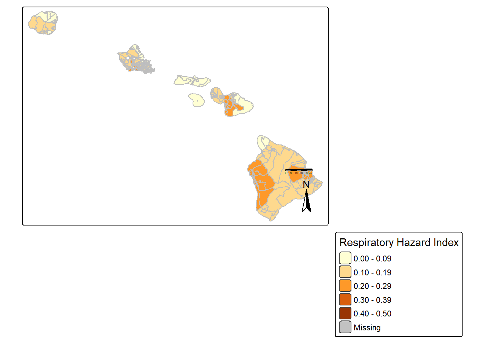

# Read in necessary libraries
library(tidyverse)
library(sf)
library(here)
library(tmap)EDS 223: Homework 1
Evaluating the Respiratory Health Index For Puerto Rico and Hawaii
Setup Code
- Loading necessary libraries
- Importing EJScreen data
# read in geodatabase of EJScreen data at the Census Block Group level
ejscreen <- sf::st_read(here::here("data", "ejscreen","EJSCREEN_2023_BG_StatePct_with_AS_CNMI_GU_VI.gdb")) Data Exploration
Objective: Look at income data as a potential risk factor for systemic environmental injustice by state and territory.
# Creating a subset to explore data on % low income by state
mean_low_income <- ejscreen %>%
group_by(STATE_NAME) %>%
summarise(mean_percent_low_income = mean(LOWINCPCT)) %>%
drop_na(mean_percent_low_income)What states or territories have the highest and lowest average percent of low income residents?
- 3 lowest average percentage low income states and territories
# Finding the states/ territories with the lowest average percent low income
lowest_mean_poverty <- mean_low_income %>%
slice_min(mean_percent_low_income, n = 5) %>%
select(STATE_NAME, mean_percent_low_income)
# Showing the state/territory with the lowest average low income percentage
head(lowest_mean_poverty, 3) - 3 highest average percentage low income states and territories
# Finding the states/ territories with the highest average percent low income
highest_mean_poverty <- mean_low_income %>%
slice_max(mean_percent_low_income, n = 5) %>%
select(STATE_NAME, mean_percent_low_income)
# Showing the state/territory with the highest average low income percentage
head(highest_mean_poverty, 3) Results: - The territory and states that have the lowest average percent of low income residents are the U.S Virgin Islands, New Hampshire, and Hawaii. - The territories and state with the highest average percent of low income residents are Puerto Rico, American Samoa, and Mississippi.
Goals: Compare Hawaii and Puerto Rico as island regions of the U.S with vastly different mean percent low income populations and statehood statuses.
Narrowing data focus
- Filter data from Hawaii and exclude areas with marine border data
# Filtering for only observation in Hawaii
hawaii <- ejscreen %>%
filter(STATE_NAME == "Hawaii") %>%
filter(ACSTOTPOP > 0) # Exclude regions with populations = 0 in EJScreen data (removes marine border)- Filter data from Puerto Rico and exclude ocean borders
# Filtering for only observations in Puerto Rico
puerto_rico <- ejscreen %>%
filter(STATE_NAME == "Puerto Rico") %>%
filter(ACSTOTPOP > 0) #Exclude regions with populations = 0 (removes marine border included in EJScreen data)Mapping air toxics respiratory health indicator
RESP data were sourced in EJScreen from EPA OAQPS and compiled by Census tract.
- Respiratory health index data for Puerto Rico
# Create tmap of Puerto Rico with Respiratory Health Index Data
pr_map <- tm_shape(puerto_rico) + # Adding Puerto Rico spatial data
tm_crs(4326) + # Setting proper coordinate reference system
tm_graticules() + # Adding graticule coordinate lines
tm_polygons(
fill = "RESP", # Fill map with data from RESP column as polygons
fill.scale = tm_scale(
values = c(
"#FFEBE6",
"#FF9C80",
"#FF5B2E",
"#D12D00",
"#751900"
),# Setting color palette
breaks = c(0, 0.1, 0.2, 0.3, 0.4, 0.5)
), # Setting desired breaks in data bins
fill.legend = tm_legend(
title = "Respiratory HI Range Values (ratio)", # Add legend title
orientation = "landscape"),
lty = "blank", # Remove boundary lines on map for cleaner map appearance
size = 2 # Set legend size
) + tm_title("Respiratory Health Index (HI) in Puerto Rico") + # Set map title
tm_layout(
bg.color = "lightblue") - Respiratory health index data for Hawaii
hawaii_map <- tm_shape(hawaii) + # Adding Hawaii spatial data
tm_crs(4326) + # Setting proper coordinate reference system
tm_graticules() + # Adding graticule coordinate lines
tm_polygons(
fill = "RESP",
# Fill map with data from RESP column as polygons
fill.scale = tm_scale(
values = c(
"#FFEBE6",
"#FF9C80",
"#FF5B2E",
"#D12D00",
"#751900",
"#A0C1D1",
"#80ADA0",
"#5F5566",
"#583748",
"#000000"
),
# Setting color palette
breaks = c(0, 0.1, 0.2, 0.3, 0.4, 0.5, 0.6, 0.7, 0.8, 0.9, 1)
),
# Setting desired breaks in data bins
fill.legend = tm_legend(
title = "Respiratory HI Range", # Set legend title
orientation = "portrait" # Legen is vertical instead of horizon
),
# Legend values are horizontal instead of vertical
lty = "blank",
# Remove boundary lines on map for cleaner map appearance
size = 2 # Set legend size
) + tm_title("Respiratory Health Index (HI) Ratio Values in Hawaii") + # Set map title
tm_layout(bg.color = "lightblue") # Make background blue to represent waterResults
# Print both maps together without source code
pr_map
hawaii_map
Discussion and Interpretation
Based on exploratory data analysis, Hawaii and Puerto Rico emerged as two geographic regions of the U.S that experience vastly different socioeconomic conditions as islands with a history of colonialism, one that experiences the benefits of statehood status and one that does not. These islands were of interest particularly for their similar size. The largest island in Hawaii (Hawaii), measures 4,028 square miles Hawaiʻi (island), where Puerto Rico measures 3,424 square miles Geography of Puerto Rico.
The maps generated represent each island’s Respiratory Health Index values per the Environmental Protection Agency (EPA). The raw values from EJScreen data range from 0.05 to 4. In order to interpret the data, a percentile scale is used in EJScreen from 0 to 100%. The 31st percentile corresponds to the raw value of 0.3, the 70th percentile corresponds to 0.4, and the 90-95th percentile corresponds to raw values ranging from 0.5 to 3. An HI of 1 or lower means air toxics are unlikely to cause adverse noncancer health effects over a lifetime of exposure.
Although the range of HI values in both maps fall below 1, it is evident that Puerto Rico, on average, experiences overall higher Respiratory health risks. The majority of the island falls within the 0.2-0.29 index value bin, which corresponds to the 21-30th percentile. There were no regions in Puerto Rico that fell into the 0-10th percentile. Compared to Hawaii, where several areas fall within 0-10. Still, other parts of the islands fall within the same percentile range. Interestingly, Hawaii had one outlying data point with a raw value between 0.9-1 on the island of Oahu. Looking at a higher resolution map, this is where the Daniel K. Inouye International Airport is located Google Maps
Many variables influence respiratory health data, and they are limited by only outdoor toxin emissions. Further analyses and visualization could assess these results as a function of land cover, roads, or industrial activity.
References
| Data | Citation | Source |
|---|---|---|
| EJScreen Data | United States Environmental Protection Agency. 2015. EJSCREEN. Retrieved: 10/04/2025, from url (http://www.epa.gov/ejscreen) | https://www.epa.gov/ejscreen |
| Puerto Rico Wikipedia | Wikimedia Foundation. (2025, September 24). Geography of Puerto Rico. Wikipedia. https://en.wikipedia.org/wiki/Geography_of_Puerto_Rico | https://en.wikipedia.org/wiki/Geography_of_Puerto_Rico |
| Hawaii Island Wikipedia | Wikimedia Foundation. (2025, September 30). Hawaiʻi (island). Wikipedia. https://en.wikipedia.org/wiki/Hawai%CA%BBi_(island) | https://en.wikipedia.org/wiki/Hawai%CA%BBi_(island) |
| Google Maps: Daniel K. Inouye International Airport | Google. Daniel K. Inouye International Airport. Google maps. https://www.google.com/maps/place/Daniel+K.+Inouye+International+Airport/@21.3242132,-157.9509347,31366m/data=!3m1!1e3!4m14!1m7!3m6!1s0x7c006632db726b03:0xd9587d69906fcbc3!2zT-KAmGFodQ!8m2!3d21.4389123!4d-158.0000565!16zL20vMGRmY24!3m5!1s0x7c006f943168f55f:0x7ed111b1cbf331df!8m2!3d21.3186623!4d-157.9254018!16zL20vMDFuNWZ3?entry=ttu&g_ep=EgoyMDI1MTAwMS4wIKXMDSoASAFQAw%3D%3D | https://www.google.com/maps/place/Daniel+K.+Inouye+International+Airport/@21.3242132,-157.9509347,31366m/data=!3m1!1e3!4m14!1m7!3m6!1s0x7c006632db726b03:0xd9587d69906fcbc3!2zT-KAmGFodQ!8m2!3d21.4389123!4d-158.0000565!16zL20vMGRmY24!3m5!1s0x7c006f943168f55f:0x7ed111b1cbf331df!8m2!3d21.3186623!4d-157.9254018!16zL20vMDFuNWZ3?entry=ttu&g_ep=EgoyMDI1MTAwMS4wIKXMDSoASAFQAw%3D%3D |
| EPA AirTox Overview | Environmental Protection Agency. AirToxScreen Overview. EPA. https://www.epa.gov/AirToxScreen/airtoxscreen-overview | https://www.epa.gov/AirToxScreen/airtoxscreen-overview |